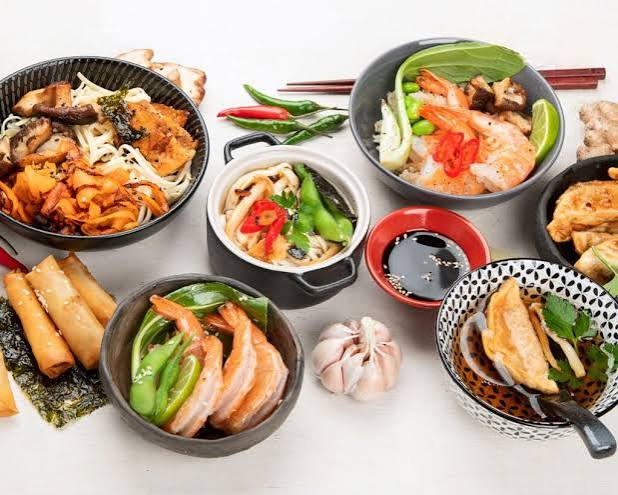

Chinese cuisine is one of the world's oldest, richest, and most diverse culinary traditions. It is deeply rooted in balance, famously utilizing the concept of Yin and Yang to harmonize flavors, textures, and nutrition. The cuisine is broadly categorized into the "Eight Great Traditions," which showcase unique regional styles. For instance, Sichuan dishes are famous for their fiery, tongue-numbing peppercorns and bold chili heat. In contrast, Cantonese cuisine focuses on mild, fresh flavors, highlighting natural ingredients through steaming and stir-frying. Staples vary geographically, with rice dominating the humid south and wheat-based noodles or buns leading the colder north. Cooking methods are highly sophisticated, relying on precise techniques like wok-tossing, braising, and deep-frying. Presentation is vital, as dishes must appeal equally to the eyes, nose, and palate. Ultimately, Chinese food is centered around community, traditionally served family-style to encourage sharing and connection.
